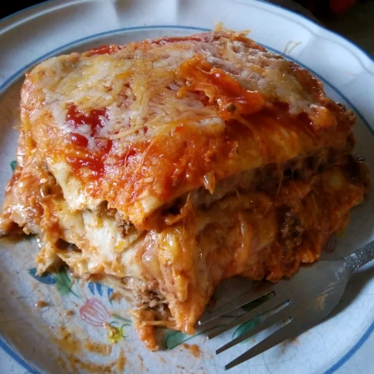

This is a traditional dish in my family. Anyone can make it really. It is composed of traditional Mexican
ingredients layered over the top of one another in a lasagna-like fashion (hence the name)
but has little similarity to lasagna, so lasagna haters have no fear!
Prep Time: 20 mins
Cook Time:40 mins
Total Time:1 hrs
Servings:16
Heat a large skillet over medium-high heat and stir in ground beef. Cook and stir
until beef is crumbly, evenly browned, and no longer pink, about 10 minutes. Drain
and discard any excess grease. Add water and taco seasoning; cook and stir until
mixture has thickened, 5 to 10 minutes.
Arrange 3 tortillas in the bottom of the casserole dish; spread about half the can
of refried beans and half the ground beef atop the tortilla layer. Sprinkle 1 cup
Colby-Jack cheese over ground beef layer. Arrange 3 more tortillas over the cheese.
Spread in the remaining 1/2 can refried beans and half the jar of taco sauce; sprinkle
with 1 cup Colby-Jack cheese. Arrange 3 more tortillas and top with remaining ground beef
and 1 cup Colby-Jack cheese. Top with last 3 tortillas and remaining 1/2 jar taco sauce.
Bake in the preheated oven until top tortilla layer begins to brown, 20 to 25 minutes.
Sprinkle 1 cup Colby-Jack cheese over lasagna.
Turn on oven's broiler.
Place lasagna under the broiler until Colby-Jack cheese is melted and bubbling, 3 to 5 minutes.